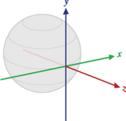

Título:Sensores
Contenido:
Descripción general de sensores
La mayoría de los dispositivos con Android tienen sensores integrados que miden el movimiento, la orientación y diversas condiciones ambientales. Estos sensores son capaces de proporcionar datos sin procesar con alta precisión y exactitud, y son útiles para supervisar el movimiento o posicionamiento tridimensional del dispositivo, o si quieres supervisar los cambios en el entorno ambiental cerca de un dispositivo. Por ejemplo, un juego puede hacer un seguimiento de las lecturas del sensor de gravedad de un dispositivo para inferir gestos y movimientos complejos del usuario, como inclinación, agitación, rotación o balanceo. Del mismo modo, una aplicación meteorológica podría usar el sensor de temperatura y el sensor de humedad de un dispositivo para calcular e informar el punto de condensación, o una aplicación de viaje podría usar el sensor de campo geomagnético y el acelerómetro para informar la dirección de una brújula.
Consulta los siguientes recursos relacionados:
• Sensores
• Sensores de movimiento
• Sensores de posición
• Sensores ambientales
• Reproducción de acelerómetro
• Demostraciones de API (SO: RotationVectorDemo)
La plataforma de Android admite tres amplias categorías de sensores:
• Sensores de movimiento
Estos sensores miden las fuerzas de aceleración y las fuerzas de rotación en tres ejes. Esta categoría incluye acelerómetros, sensores de gravedad, giroscopios y sensores del vector de rotación.
• Sensores ambientales
Estos sensores miden varios parámetros ambientales, como la temperatura y la presión del aire ambiental, la iluminación y la humedad. Esta categoría incluye barómetros, fotómetros y termómetros.
• Sensores de posición
Estos sensores miden la posición física de un dispositivo. Esta categoría incluye sensores de orientación y magnetómetros.
Puedes acceder a los sensores disponibles en el dispositivo y adquirir datos sin procesar del sensor mediante el marco de trabajo del sensor de Android. El marco de trabajo del sensor proporciona varias clases e interfaces que ayudan a realizar una amplia variedad de tareas relacionadas con el sensor. Por ejemplo, puedes usar el marco de trabajo del sensor para las siguientes tareas:
• Determina qué sensores están disponibles en un dispositivo.
• Determina las capacidades de un sensor individual, como su rango máximo, el fabricante, los requisitos de energía y la resolución.
• Adquiere datos sin procesar del sensor y define la velocidad mínima con la que adquirirás los datos del sensor.
• Registra y cancela el registro de oyentes de objetos de escucha de eventos que supervisan los cambios del sensor.
En este tema, se proporciona una descripción general de los sensores que están disponibles en la plataforma de Android. También se proporciona una introducción al marco de trabajo del sensor.
Introducción a los sensores
El marco de trabajo del sensor de Android permite acceder a muchos tipos de sensores. Algunos de estos sensores se basan en hardware y otros en software. Los sensores basados en hardware son componentes físicos integrados en un dispositivo de mano o tablet. Para obtener los datos, miden directamente propiedades ambientales específicas, como la aceleración, la intensidad del campo geomagnético o el cambio angular. Los sensores basados en software no son dispositivos físicos, aunque imitan los sensores basados en hardware. Los sensores basados en software derivan sus datos de uno o más de los sensores basados en hardware y, a veces, se denominan sensores virtuales o sensores sintéticos. El sensor de aceleración lineal y el sensor de gravedad son ejemplos de sensores basados en software. En la tabla 1, se resumen los sensores que son compatibles con la plataforma de Android.
Solo unos pocos dispositivos con Android tienen todos los tipos de sensores. Por ejemplo, la mayoría de los dispositivos manuales y tablets tienen un acelerómetro y un magnetómetro, pero solo unos pocos dispositivos tienen barómetros o termómetros. Además, un dispositivo puede tener más de un sensor de un tipo determinado. Por ejemplo, un dispositivo puede tener dos sensores de gravedad, cada uno con un rango diferente.
Tabla 1: Tipos de sensores compatibles con la plataforma de Android
Sensor Tipo Descripción Usos habituales
TYPE_ACCELEROMETER Hardware Mide en m/s 2la fuerza de aceleración que se aplica a un dispositivo en los tres ejes físicos (x, y, z),
incluida la fuerza de gravedad.
TYPE_AMBIENT_TEMPERATURE Hardware Mide la temperatura ambiente de la habitación en grados Celsius (°C). Consulta la siguiente nota.
Detección de
movimiento
(agitación,
inclinación, etc.).
Supervisión de la temperatura del air
TYPE_GRAVITY Software o
hardware
Mide en m/s2la fuerza de gravedad que se aplica a un dispositivo en los tres ejes físicos (x, y, z).
Detección de movimiento
(agitación,
inclinación, etc.).
TYPE_GYROSCOPE Hardware Mide en rad/s la velocidad de rotación de un dispositivo alrededor de cada uno de los tres ejes
físicos (x, y, z).
Detección de
rotación (agitación,giro, etc.).
TYPE_LIGHT Hardware Mide el nivel de luz ambiental (iluminación) en lx. Control del brillo dla pantalla.
TYPE_LINEAR_ACCELERATION Software o
hardware
Mide en m/s2la fuerza de aceleración que se aplica a un dispositivo en los tres ejes físicos (x, y, z), excluyendo la fuerza de gravedad.
Supervisión de la aceleración a lo largo de un solo ej
TYPE_MAGNETIC_FIELD Hardware Mide el campo geomagnético ambiental de los tres ejes físicos (x, y, z) en μT.
TYPE_ORIENTATION Software Mide los grados de rotación de un dispositivo alrededor de los tres ejes físicos (x, y, z). A partir de
la API nivel 3, puedes obtener la matriz de
inclinación y la matriz de rotación de un dispositivo
mediante el uso del sensor de gravedad y el sensor
del campo geomagnético de un dispositivo usando
el sensor de gravedad junto con el
método getRotationMatrix().
TYPE_PRESSURE Hardware Mide la presión del aire del ambiente en hPa o mbar.
TYPE_PROXIMITY Hardware Mide en cm la proximidad de un objeto con respecto a la pantalla de visualización de un dispositivo. Este
sensor en general se usa para determinar si un
dispositivo manual se está sosteniendo cerca del
oído de una persona.
TYPE_RELATIVE_HUMIDITY Hardware Mide en valor de porcentaje (%) la humedad relativa del ambiente.
Creación de una brújula.
Determinación de lposición del
dispositivo.
Supervisa los cambios de la presión del aire.
Posición del teléfodurante una
llamada.
Supervisa el puntode condensación, lhumedad absolutala humedad relativ
TYPE_ROTATION_VECTOR Software o
hardware
Mide la orientación de un dispositivo mediante los tres elementos del vector de rotación del dispositivo.
Detección de movimiento y detección de rotación.
TYPE_TEMPERATURE Hardware Mide la temperatura del dispositivo en grados Celsius (°C). La implementación de este sensor
varía según el dispositivo; en la API nivel 14 se
reemplazó por el
sensor TYPE_AMBIENT_TEMPERATURE.
Supervisión de temperaturas.
Marco de trabajo del sensor
Puedes acceder a estos sensores y adquirir datos del sensor sin procesar con el marco de trabajo del sensor de Android. El marco de trabajo del sensor es parte del paquete android.hardware e incluye las siguientes clases e interfaces:
SensorManager
Puedes usar esta clase para crear una instancia del servicio del sensor. Esta clase proporciona varios métodos para acceder a sensores y escucharlos, registrar y cancelar el registro de objetos de escucha de sensores de eventos y adquirir información de orientación. También proporciona varias constantes del sensor que se usan para informar la exactitud del sensor, definir las velocidades de adquisición de datos y calibrar sensores.
Sensor
Puedes usar esta clase para crear una instancia de un sensor específico. Esta clase proporciona varios métodos que permiten determinar las capacidades de un sensor.
SensorEvent
El sistema usa esta clase para crear un objeto de evento de sensor, que proporciona información sobre un evento del sensor. Un objeto de evento de sensor incluye la siguiente información: los datos sin procesar del sensor, el tipo de sensor que generó el evento, la exactitud de los datos y la marca de tiempo del evento.
SensorEventListener
Puedes usar esta interfaz para crear dos métodos de devolución de llamada que reciben notificaciones (eventos del sensor) cuando cambian los valores del sensor o cuando cambia la exactitud del sensor.
En una aplicación típica, estas API relacionadas con sensores se usan para realizar dos tareas básicas:
• Identificación de sensores y capacidades de los sensores
La identificación de sensores y capacidades de sensores en el tiempo de ejecución es útil si la aplicación tiene características que dependen de tipos o capacidades de sensores específicos. Por ejemplo, es posible que quieras identificar todos los sensores que están presentes en un dispositivo e inhabilitar las funciones de la aplicación que dependen de sensores que no están presentes. Del mismo modo, es posible que quieras identificar todos los sensores de un tipo determinado para que puedas elegir la implementación del sensor que tenga el rendimiento óptimo para tu aplicación.
• Supervisión de los eventos del sensor
La supervisión de los eventos del sensor es la manera en la que adquieres los datos sin procesar del sensor. Un evento de sensor ocurre cada vez que un sensor detecta un cambio en los parámetros que está midiendo. Un evento de sensor proporciona cuatro tipos de datos: el nombre del sensor que activó el evento, la marca de tiempo del evento, la exactitud del evento y los datos sin procesar del sensor que activaron el evento.
Disponibilidad del sensor
Si bien la disponibilidad del sensor varía de un dispositivo a otro, también puede variar de una versión de Android a otra. Esto se debe a que los sensores de Android se introdujeron en el transcurso de varias versiones de la plataforma. Por ejemplo, muchos sensores se introdujeron en Android 1.5 (API nivel 3), pero algunos no se implementaron ni estuvieron disponibles hasta Android 2.3 (API nivel 9). Asimismo, se introdujeron varios sensores en Android 2.3 (API nivel 9) y Android 4.0 (API nivel 14). Dos sensores dejaron de estar disponibles y se reemplazaron por sensores más recientes y mejorados.
En la tabla 2, se resume la disponibilidad de los sensores en cada una de las plataformas. Solo se enumeran cuatro plataformas porque son las plataformas que involucraron cambios en los sensores. Los sensores enumerados como obsoletos seguirán estando disponibles en plataformas posteriores (siempre que el sensor esté presente en un dispositivo), en concordancia con la política de compatibilidad de versiones anteriores de Android.
Tabla 2. Disponibilidad de sensores por plataforma
SensorAndroid 4.0 (API nivel 14)
Android 2.3 (API nivel 9)
Android 2.2 (API nivel 8)
Android 1.5 (API nivel 3)
TYPE_ACCELEROMETER Sí Sí Sí Sí TYPE_AMBIENT_TEMPERATURE Sí n/a n/a n/a TYPE_GRAVITY Sí Sí n/a n/a
TYPE_GYROSCOPE Sí Sí n/a1 n/a1 TYPE_LIGHT Sí Sí Sí Sí TYPE_LINEAR_ACCELERATION Sí Sí n/a n/a TYPE_MAGNETIC_FIELD Sí Sí Sí Sí TYPE_ORIENTATION Sí2 Sí2 Sí2 Sí TYPE_PRESSURE Sí Sí n/a1 n/a1 TYPE_PROXIMITY Sí Sí Sí Sí TYPE_RELATIVE_HUMIDITY Sí n/a n/a n/a TYPE_ROTATION_VECTOR Sí Sí n/a n/a
TYPE_TEMPERATURE Sí2 Sí Sí Sí
1 Este tipo de sensor se agregó en Android 1.5 (API nivel 3), pero no estuvo disponible para Android 2.3 (API nivel 9).
2 Este sensor está disponible, pero es obsoleto.
Identificación de sensores y capacidades de sensores
El marco de trabajo del sensor de Android proporciona varios métodos que te permiten determinar con facilidad en el tiempo de ejecución qué sensores están en un dispositivo. La API también proporciona métodos que permiten determinar las capacidades de cada sensor, como el rango máximo, la resolución y los requisitos de potencia.
Para identificar los sensores que están en un dispositivo, primero debes obtener una referencia al servicio del sensor. Para ello, crea una instancia de la clase SensorManager llamando al método getSystemService() y pasando el argumento SENSOR_SERVICE. Por ejemplo:
KOTLINJAVA
private SensorManager sensorManager;
...
sensorManager = (SensorManager) getSystemService(Context.SENSOR_SERVICE);
Luego, puedes obtener una lista de cada sensor en un dispositivo llamando al método getSensorList() y utilizando la constante TYPE_ALL. Por ejemplo:
KOTLINJAVA
List<Sensor> deviceSensors = sensorManager.getSensorList(Sensor.TYPE_ALL);
Si quieres enumerar todos los sensores de un tipo determinado, puedes usar otra constante en lugar de TYPE_ALL, como TYPE_GYROSCOPE, TYPE_LINEAR_ACCELERATION o TYPE_GRAVITY.
También puedes determinar si un tipo específico de sensor existe en un dispositivo mediante el método getDefaultSensor() y pasar la constante de tipo para un sensor específico. Si un dispositivo tiene más de un sensor de un tipo determinado, uno de los sensores se debe designar como el sensor predeterminado. Si no existe un sensor predeterminado para un tipo de sensor dado, la llamada al método mostrará un valor nulo, lo que significa que el dispositivo no tiene ese tipo de sensor. Por ejemplo, en el siguiente código, se comprueba si hay un magnetómetro en un dispositivo:
KOTLINJAVA
private SensorManager sensorManager;
...
sensorManager = (SensorManager) getSystemService(Context.SENSOR_SERVICE); if (sensorManager.getDefaultSensor(Sensor.TYPE_MAGNETIC_FIELD) != null){ // Success! There's a magnetometer.
} else {
// Failure! No magnetometer.
}
Nota: Android no requiere que los fabricantes de dispositivos construyan ningún tipo particular de sensores en sus dispositivos con Android, por lo que los dispositivos pueden tener una amplia gama de configuraciones de sensor.
Además de enumerar los sensores que están en un dispositivo, puedes usar los métodos públicos de la clase Sensor para determinar las capacidades y los atributos de los sensores individuales. Esto es útil si quieres que tu aplicación se comporte de manera diferente según los sensores o las
capacidades de los sensores disponibles en un dispositivo. Por ejemplo, puedes usar los métodos getResolution() y getMaximumRange() para obtener la resolución de un sensor y el rango máximo de medición. También puedes usar el método getPower() para obtener los requisitos de energía de un sensor.
Dos de los métodos públicos son particularmente útiles si quieres optimizar tu aplicación para diferentes sensores del fabricante o diferentes versiones de un sensor. Por ejemplo, si tu aplicación necesita supervisar gestos del usuario, como inclinar y agitar, puedes crear un conjunto de reglas y optimizaciones para dispositivos más nuevos, que tengan un sensor de gravedad específico, y otro conjunto de reglas de filtrado de datos y optimizaciones para dispositivos que no tengan sensor de gravedad y solo tengan un acelerómetro. En el siguiente ejemplo de código, se muestra cómo puedes usar los métodos getVendor() y getVersion() para hacer esto. En esta muestra, buscamos un sensor de gravedad que enumere a Google LLC como proveedor y que tenga el número de versión 3. Si ese sensor en particular no está presente en el dispositivo, intentamos usar el acelerómetro.
KOTLINJAVA
private SensorManager sensorManager;
private Sensor mSensor;
...
sensorManager = (SensorManager) getSystemService(Context.SENSOR_SERVICE); mSensor = null;
if (sensorManager.getDefaultSensor(Sensor.TYPE_GRAVITY) != null){ List<Sensor> gravSensors = sensorManager.getSensorList(Sensor.TYPE_GRAVITY); for(int i=0; i<gravSensors.size(); i++) {
if ((gravSensors.get(i).getVendor().contains("Google LLC")) &&
(gravSensors.get(i).getVersion() == 3)){
// Use the version 3 gravity sensor.
mSensor = gravSensors.get(i);
}
}
}
if (mSensor == null){
// Use the accelerometer.
if (sensorManager.getDefaultSensor(Sensor.TYPE_ACCELEROMETER) != null){ mSensor = sensorManager.getDefaultSensor(Sensor.TYPE_ACCELEROMETER); } else{
// Sorry, there are no accelerometers on your device.
// You can't play this game.
}
}
Otro método útil es el método getMinDelay(), que muestra el intervalo de tiempo mínimo (en microsegundos) que un sensor puede usar para detectar datos. Cualquier sensor que muestre un valor distinto de cero para el método getMinDelay() es un sensor de transmisión. Los sensores de
transmisión detectan datos a intervalos regulares y se introdujeron en Android 2.3 (API nivel 9). Si un sensor muestra cero cuando llamas al método getMinDelay(), significa que el sensor no es un sensor de transmisión, porque informa datos solo cuando hay un cambio en los parámetros que está detectando.
El método getMinDelay() es útil porque te permite determinar la velocidad máxima con la que un sensor puede adquirir datos. Si ciertas características de la aplicación requieren altas velocidades de adquisición de datos o un sensor de transmisión, puedes usar este método para determinar si un sensor cumple con esos requisitos y luego habilitar o inhabilitar las funciones relevantes en tu aplicación según corresponda.
Precaución: La velocidad máxima de adquisición de datos de un sensor no es necesariamente la velocidad con la que el marco del sensor entrega los datos a la aplicación. El marco de trabajo del sensor informa los datos a través de eventos del sensor, y varios factores influyen en la velocidad a la que la aplicación recibe los eventos del sensor. Para obtener más información, consulta Cómo supervisar los eventos del sensor.
Cómo supervisar los eventos del sensor
Para supervisar los datos sin procesar del sensor, debes implementar dos métodos de devolución de llamada expuestos a través de la
interfaz SensorEventListener: onAccuracyChanged() y onSensorChanged(). El sistema Android llama a estos métodos siempre que ocurre lo siguiente:
• La exactitud de un sensor cambia.
En este caso, el sistema invoca el método onAccuracyChanged(), que proporciona una referencia al objeto Sensor que cambió y la nueva exactitud del sensor. La exactitud está representada por una de las cuatro constantes de
estado: SENSOR_STATUS_ACCURACY_LOW, SENSOR_STATUS_ACCURACY_MEDIUM, SENSOR_STATUS_ACCU RACY_HIGH o SENSOR_STATUS_UNRELIABLE.
• Un sensor informa un valor nuevo.
En este caso, el sistema invoca el método onSensorChanged(), que proporciona un objeto SensorEvent. Un objeto SensorEvent contiene información sobre los nuevos datos del sensor, por ejemplo, la exactitud de los datos, el sensor que generó los datos, la marca de tiempo en la que se generaron los datos y los nuevos datos que registró el sensor.
En el siguiente código, se muestra cómo usar el método onSensorChanged() para supervisar los datos del sensor de luz. En este ejemplo, se muestran los datos sin procesar del sensor en un TextView que se define en el archivo main.xml como sensor_data.
KOTLINJAVA
public class SensorActivity extends Activity implements SensorEventListener { private SensorManager sensorManager;
private Sensor mLight;
@Override
public final void onCreate(Bundle savedInstanceState) {
super.onCreate(savedInstanceState);
setContentView(R.layout.main);
sensorManager = (SensorManager) getSystemService(Context.SENSOR_SERVICE); mLight = sensorManager.getDefaultSensor(Sensor.TYPE_LIGHT);
}
@Override
public final void onAccuracyChanged(Sensor sensor, int accuracy) { // Do something here if sensor accuracy changes.
}
@Override
public final void onSensorChanged(SensorEvent event) {
// The light sensor returns a single value.
// Many sensors return 3 values, one for each axis.
float lux = event.values[0];
// Do something with this sensor value.
}
@Override
protected void onResume() {
super.onResume();
sensorManager.registerListener(this, mLight,
SensorManager.SENSOR_DELAY_NORMAL);
}
@Override
protected void onPause() {
super.onPause();
sensorManager.unregisterListener(this);
}
}
En este ejemplo, el retraso de los datos predeterminado (SENSOR_DELAY_NORMAL) se especifica cuando se invoca el método registerListener(). El retraso de los datos (o la tasa de muestreo) controla el intervalo en el que los eventos del sensor se envían a la aplicación a través del método de devolución de llamada onSensorChanged(). El retraso de datos predeterminado es adecuado para supervisar los cambios típicos de orientación de la pantalla y utiliza un retraso de 200,000 microsegundos. Puedes especificar otros retrasos de datos, como SENSOR_DELAY_GAME (retraso de 20,000 microsegundos), SENSOR_DELAY_UI (retraso de 60,000 microsegundos) o SENSOR_DELAY_FASTEST (retraso de 0 microsegundos). A partir de Android 3.0 (API nivel 11), también puedes especificar el retraso como un valor absoluto (en microsegundos).
El retraso que especificas es solo un retraso sugerido. El sistema Android y otras aplicaciones pueden modificar este retraso. Como práctica recomendada, debes evitar especificar del retraso más largo posible, porque el sistema en general usa un retraso menor que el que especificas (es decir, debes elegir la tasa de muestreo más baja que cumpla con las necesidades de tu aplicación). El uso
de un retraso mayor impone una carga menor en el procesador y, por lo tanto, usa menos alimentación.
No existe un método público para determinar la velocidad a la que el marco de trabajo del sensor envía eventos del sensor a tu aplicación; sin embargo, puedes usar las marcas de tiempo asociadas con cada evento del sensor para calcular la tasa de muestreo en varios eventos. No es necesario cambiar la tasa de muestreo (retraso) una vez definida. Si por algún motivo necesitas cambiar el retraso, deberás cancelar el registro y volver a registrar el objeto de escucha.
También es importante tener en cuenta que este ejemplo utiliza los métodos de devolución de llamada onResume() y onPause() para registrar el evento y cancelar el registro del objeto de escucha del sensor. Como práctica recomendada, siempre debes desactivar los sensores que no necesitas, en especial, cuando la actividad está en pausa. De lo contrario, es posible que la batería se agote en unas horas, ya que algunos sensores tienen requisitos de alimentación intensa y pueden agotar la batería con rapidez. El sistema no inhabilitará los sensores automáticamente cuando la pantalla se apague.
Cómo controlar diferentes configuraciones del sensor
Android no especifica una configuración de sensor estándar para dispositivos, lo que significa que los fabricantes de dispositivos pueden incorporar cualquier configuración de sensor que deseen en sus dispositivos con Android. Como resultado, los dispositivos pueden incluir una variedad de sensores en una amplia gama de configuraciones. Si la aplicación se basa en un tipo específico de sensor, debes asegurarte de que el sensor esté presente en un dispositivo para que la aplicación se pueda ejecutar correctamente.
Tienes dos opciones para garantizar que un sensor determinado esté presente en un dispositivo:
• Detecta sensores en el tiempo de ejecución y habilita o inhabilita las características de la aplicación según corresponda.
• Usa los filtros de Google Play para apuntar a dispositivos con configuraciones de sensor específicas. En las siguientes secciones, se analiza cada una de las opciones.
Detecta los sensores en el tiempo de ejecución
Si tu aplicación usa un tipo específico de sensor, pero no depende de él, puedes usar el marco de trabajo del sensor para detectar el sensor en el tiempo de ejecución y luego inhabilitar o habilitar las características de la aplicación según corresponda. Por ejemplo, una aplicación de navegación podría usar el sensor de temperatura, el sensor de presión, el sensor GPS y el sensor del campo geomagnético para mostrar la temperatura, la presión barométrica, la ubicación y la dirección de la brújula. Si un dispositivo no tiene sensor de presión, puedes usar el marco de trabajo del sensor para detectar la ausencia del sensor de presión en el tiempo de ejecución y luego inhabilitar la parte de la IU de la aplicación que muestra la presión. Por ejemplo, en el siguiente código, se comprueba si hay un sensor de presión en un dispositivo:
KOTLINJAVA
private SensorManager sensorManager;
...
sensorManager = (SensorManager) getSystemService(Context.SENSOR_SERVICE); if (sensorManager.getDefaultSensor(Sensor.TYPE_PRESSURE) != null){ // Success! There's a pressure sensor.
} else {
// Failure! No pressure sensor.
}
Usa los filtros de Google Play para orientar configuraciones específicas de sensores
Si estás publicando tu aplicación en Google Play, puedes usar el elemento <uses-feature> en el archivo de manifiesto para filtrar la aplicación en los dispositivos que no tienen la configuración de sensor adecuada para tu aplicación. El elemento <uses-feature> tiene varios descriptores de hardware que te permiten filtrar aplicaciones según la presencia de sensores específicos. Algunos de los sensores que puedes incluir son los siguientes: acelerómetro, barómetro, brújula (campo geomagnético), giroscopio, luz y proximidad. La siguiente es una entrada de manifiesto de ejemplo que filtra las apps que no tienen un acelerómetro:
<uses-feature android:name="android.hardware.sensor.accelerometer" android:required="true" />
Si agregas este elemento y descriptor al manifiesto de tu aplicación, los usuarios verán tu aplicación en Google Play solo si el dispositivo tiene un acelerómetro.
Debes establecer el descriptor en android:required="true" solo si tu aplicación se basa completamente en un sensor específico. Si tu aplicación utiliza un sensor para alguna funcionalidad, pero aún se ejecuta sin el sensor, debes incluir el sensor en el elemento <uses-feature>, pero establecer el descriptor en android:required="false". Esto ayuda a garantizar que los dispositivos puedan instalar la app incluso si no tienen ese sensor en particular. Esta es también una práctica recomendada de administración de proyectos que te ayuda a hacer un seguimiento de las funciones que usa tu app. Ten en cuenta que, si la aplicación usa un sensor en particular, pero aún se ejecuta sin el sensor, debes detectar el sensor en el tiempo de ejecución y habilitar o inhabilitar las características de la aplicación según corresponda.
Sistema de coordenadas del sensor
En general, el marco de trabajo del sensor utiliza un sistema de coordenadas estándar de 3 ejes para expresar valores de datos. Para la mayoría de los sensores, el sistema de coordenadas se define en relación con la pantalla del dispositivo cuando el dispositivo se mantiene en su orientación predeterminada (consulta la figura 1). Cuando un dispositivo se mantiene en la orientación predeterminada, el eje X es horizontal y apunta hacia la derecha; el eje Y es vertical y apunta hacia arriba; y el eje Z apunta hacia el exterior de la pantalla. En este sistema, las coordenadas de la pantalla tienen valores Z negativos. Los siguientes sensores utilizan este sistema de coordenadas:
Figura 1: Sistema de coordenadas (en relación con un dispositivo) que usa la API del sensor • Sensor de aceleración
• Sensor de gravedad
• Giroscopio
• Sensor de aceleración lineal
• Sensor de campo geomagnético
El punto más importante para comprender este sistema de coordenadas es que los ejes no cambian cuando cambia la orientación de la pantalla; es decir, el sistema de coordenadas nunca cambia a medida que el dispositivo se mueve. Este comportamiento es el mismo que el del sistema de coordenadas OpenGL.
Otro punto que debes comprender es que tu aplicación no debe suponer que la orientación natural (predeterminada) de un dispositivo será la orientación vertical. La orientación natural de muchos dispositivos tablet es horizontal. Además, el sistema de coordenadas del sensor siempre se basa en la orientación natural del dispositivo.
Finalmente, si la aplicación hace coincidir los datos del sensor con la visualización en pantalla, debes usar el método getRotation() para determinar la rotación de la pantalla y, luego, usar el método remapCoordinateSystem() para asignar las coordenadas del sensor a las coordenadas de la pantalla. Debes hacer esto incluso si el manifiesto especifica una pantalla de solo retrato.
Nota: Algunos sensores y métodos usan un sistema de coordenadas que es relativo al marco de referencia del mundo (en oposición al marco de referencia del dispositivo). Estos sensores y métodos muestran datos que representan el movimiento del dispositivo o la posición del dispositivo en relación con la Tierra. Para obtener más información, consulta el método getOrientation(), el método getRotationMatrix(), el sensor de orientación y el sensor del vector de rotación.
Prácticas recomendadas para acceder a los sensores y usarlos
Cuando diseñes la implementación del sensor, asegúrate de seguir las pautas que se analizan en esta sección. Estas pautas son prácticas recomendadas para cualquier persona que esté usando el marco de trabajo del sensor para acceder a los sensores y adquirir sus datos.
Recopila solo datos de los sensores en segundo plano
En los dispositivos que ejecutan Android 9 (API nivel 28) o posterior, las aplicaciones que se ejecutan en segundo plano tienen las siguientes restricciones:
• Los sensores que usan el modo de generación de informes continuo, como acelerómetros y giroscopios, no reciben eventos.
• Los sensores que utilizan los modos de generación de informes cuando se producen cambios o por única vez no reciben eventos.
Teniendo en cuenta estas restricciones, es mejor detectar los eventos del sensor cuando la app está en primer plano o como parte de un servicio en primer plano.
Cancela el registro de los objetos de escucha de los sensores
Asegúrate de cancelar el registro de los objetos de escucha del sensor cuando hayas terminado de usar el sensor o cuando se detenga la actividad del sensor. Si se registra un objeto de escucha del sensor y se detiene la actividad, el sensor continuará adquiriendo datos y consumiendo recursos de
la batería, a menos que canceles el registro del sensor. En el siguiente código, se muestra cómo usar el método onPause() para cancelar el registro de un objeto de escucha:
KOTLINJAVA
private SensorManager sensorManager;
...
@Override
protected void onPause() {
super.onPause();
sensorManager.unregisterListener(this);
}
Para obtener más información, consulta unregisterListener(SensorEventListener).
Haz una prueba con Android Emulator
Android Emulator incluye un conjunto de controles de sensores virtuales que permiten probar sensores como el acelerómetro, la temperatura ambiente, el magnetómetro, la proximidad, la luz y más.
El emulador usa una conexión con un dispositivo Android que ejecuta la app SdkControllerSensor. Ten en cuenta que esta app solo está disponible en dispositivos con Android 4.0 (API nivel 14) o versiones posteriores. (Si el dispositivo ejecuta Android 4.0, debe tener la revisión 2 instalada). La app SdkControllerSensor supervisa los cambios en los sensores del dispositivo y los transmite al emulador. El emulador se transforma en función de los nuevos valores que recibe de los sensores del dispositivo.
Puedes ver el código fuente de la app SdkControllerSensor en la siguiente ubicación:
$ your-android-sdk-directory/tools/apps/SdkController
Para transferir datos entre tu dispositivo y el emulador, sigue estos pasos:
1. Comprueba que la depuración de USB esté habilitada en tu dispositivo.
2. Conecta el dispositivo a la máquina de desarrollo con un cable USB.
3. Inicia la app SdkControllerSensor en tu dispositivo.
4. En la app, selecciona los sensores que quieras emular.
5. Ejecuta el siguiente comando adb:
$ adb forward tcp:1968 tcp:1968
6. Inicia el emulador. Aplica las transformaciones al emulador moviendo el dispositivo.
Nota: Si los movimientos que haces en el dispositivo físico no transforman el emulador, intenta ejecutar el comando adb del paso 5 de nuevo.
Para obtener más información, consulta la Guía de Android Emulator.
No bloquees el método onSensorChanged()
Los datos del sensor pueden cambiar a una velocidad alta, lo que significa que es posible que el sistema llame al método onSensorChanged(SensorEvent) con bastante frecuencia. Como práctica recomendada, debes hacer lo menos posible dentro del
método onSensorChanged(SensorEvent) para no bloquearlo. Si tu aplicación requiere que hagas un filtro de datos o que reduzcas los datos del sensor, debes realizar ese trabajo fuera del método onSensorChanged(SensorEvent).
Evita usar métodos o tipos de sensores obsoletos
Varios métodos y constantes ya no están disponibles. En particular, el tipo de
sensor TYPE_ORIENTATION es obsoleto. Para obtener datos de orientación, debes utilizar el método getOrientation() en su lugar. Del mismo modo, el tipo de sensor TYPE_TEMPERATURE es obsoleto. En su lugar, debes usar el tipo de sensor TYPE_AMBIENT_TEMPERATURE en dispositivos que ejecutan Android 4.0.
Comprueba los sensores antes de usarlos
Siempre comprueba que existe un sensor en un dispositivo antes de intentar obtener datos de él. No supongas que existe un sensor simplemente porque es un sensor de uso frecuente. Los fabricantes de dispositivos no están obligados a proporcionar sensores particulares en sus dispositivos.
Elige los retrasos del sensor con cuidado
Cuando registres un sensor con el método registerListener(), asegúrate de elegir un ritmo de entrega adecuado para tu aplicación o caso de uso. Los sensores pueden proporcionar datos a ritmos muy rápidos. Si permites que el sistema envíe datos adicionales que no necesitas, se desperdician recursos del sistema y se consume batería.
Sensores de movimiento
La plataforma Android proporciona varios sensores que te permiten supervisar el movimiento de un dispositivo.
Las arquitecturas disponibles varían según el tipo de sensor:
• Los sensores vectoriales de rotación, de gravedad, de aceleración lineal, de movimiento significativo, de contador de pasos y de detector de pasos se basan en hardware o en software.
• Los sensores del acelerómetro y del giroscopio siempre están basados en hardware.
La mayoría de los dispositivos Android tienen un acelerómetro, y ahora muchos incluyen un giroscopio. La disponibilidad de los sensores basados en software es más variada porque, a menudo, dependen de uno o más sensores de hardware para obtener sus datos. Según el dispositivo, estos sensores basados en software pueden obtener sus datos del acelerómetro y el magnetómetro, o del giroscopio.
Los sensores de movimiento son útiles para supervisar el movimiento del dispositivo, como la inclinación, la vibración, la rotación o el balanceo. El movimiento suele ser un reflejo de la interacción directa del usuario (por ejemplo, un jugador que conduce un vehículo o controla una pelota), pero también puede ser un reflejo del entorno físico en el que se encuentra el dispositivo (por ejemplo, moviéndose contigo mientras viajas en automóvil). En el primer caso, estás supervisando un movimiento relacionado con el marco de referencia del dispositivo o de tu aplicación; en cambio, en el segundo, estás supervisando un movimiento relacionado con el marco de referencia terrestre. Los sensores de movimiento por sí solos no suelen utilizarse para supervisar la posición del dispositivo, pero pueden usarse con otros sensores, como el de campo geomagnético, para determinar la posición de un dispositivo en relación con el marco de referencia terrestre (consulta Sensores de posición para obtener más información).
Todos los sensores de movimiento muestran matrices multidimensionales de valores de sensor para cada SensorEvent. Por ejemplo, durante un evento de un solo sensor, el acelerómetro muestra datos de fuerza de aceleración para los tres ejes de coordenadas, y el giroscopio muestra datos de velocidad de rotación para esos mismos ejes. Estos valores de datos se muestran en una matriz float (values), junto con otros parámetros SensorEvent. En la tabla 1, se resumen los sensores de movimiento disponibles en la plataforma Android.
Tabla 1: Sensores de movimiento compatibles con la plataforma Android
Sensor Datos de eventos de los sensores Descripción Unidades de me
TYPE_ACCELEROMETER SensorEvent.values[0] Indica la
m/s2
fuerza de
aceleración
en el eje x
(incluida la
gravedad).
SensorEvent.values[1] Indica la
fuerza de
aceleración
en el eje Y
(incluida la
gravedad).
SensorEvent.values[2] Indica la
fuerza de
aceleración
en el eje z
(incluida la
gravedad).
TYPE_ACCELEROMETER_UNCALIBRATED SensorEvent.values[0] Indica la
m/s2
aceleración
medida en el
eje X sin
compensación
de sesgo.
SensorEvent.values[1] Indica la
aceleración
medida en el
eje Y sin
compensación
de sesgo.
SensorEvent.values[2] Indica la
aceleración
medida en el
eje Z sin
compensación
de sesgo.
SensorEvent.values[3] Indica la
aceleración
medida en el
eje X con
compensación
de sesgo
estimada.
SensorEvent.values[4] Indica la
aceleración
medida en el
eje Y con
compensación
de sesgo
estimada.
SensorEvent.values[5] Indica la
aceleración
medida en el
eje Z con
compensación
de sesgo
estimada.
TYPE_GRAVITY SensorEvent.values[0] Indica la
m/s2
fuerza de
gravedad en
el eje X.
SensorEvent.values[1] Indica la
fuerza de
gravedad en
el eje y.
SensorEvent.values[2] Indica la
fuerza de
gravedad en
el eje z.
TYPE_GYROSCOPE SensorEvent.values[0] Indica la
rad/s
rotación
alrededor del
eje x.
SensorEvent.values[1] Indica la
rotación
alrededor del
eje y.
SensorEvent.values[2] Indica la
rotación
alrededor del
eje z.
TYPE_GYROSCOPE_UNCALIBRATED SensorEvent.values[0] Indica la
rad/s
velocidad de
rotación (sin
compensación
de variación)
alrededor del
eje x.
SensorEvent.values[1] Indica la
velocidad de
rotación (sin
compensación
de variación)
alrededor del
eje y.
SensorEvent.values[2] Indica la
velocidad de
rotación (sin
compensación
de variación)
alrededor del
eje z.
SensorEvent.values[3] Indica la
variación
estimada
alrededor del
eje x.
SensorEvent.values[4] Indica la
variación
estimada
alrededor del
eje y.
SensorEvent.values[5] Indica la
variación
estimada
alrededor del
eje z.
TYPE_LINEAR_ACCELERATION SensorEvent.values[0] Indica la
m/s2
fuerza de
aceleración
en el eje x (sin
incluir la
gravedad).
SensorEvent.values[1] Indica la
fuerza de
aceleración
en el eje y (sin
incluir la
gravedad).
SensorEvent.values[2] Indica la
fuerza de
aceleración
en el eje z (sin
incluir la
gravedad).
TYPE_ROTATION_VECTOR SensorEvent.values[0] Indica el componente
vectorial de
rotación en el
eje x (x *
sin(θ/2)).
SensorEvent.values[1] Indica el
componente
vectorial de
rotación en el
eje y (y *
sin(θ/2)).
SensorEvent.values[2] Indica el
componente
vectorial de
rotación en el
eje z (z *
sin(θ/2)).
SensorEvent.values[3] Indica el
componente
escalar del
vector de
rotación
((cos(θ/2)).1
Sin unidades
TYPE_SIGNIFICANT_MOTION N/D N/D N/D
TYPE_STEP_COUNTER SensorEvent.values[0] Indica la cantidad de
pasos que dio
el usuario
desde el
último reinicio
mientras
estaba
activado el
sensor.
Pasos
TYPE_STEP_DETECTOR N/D N/D N/D 1 El componente escalar es un valor opcional.
El sensor vectorial de rotación y el sensor de gravedad son los sensores más utilizados para detectar y supervisar el movimiento. El sensor vectorial de rotación es muy versátil y puede utilizarse para una amplia gama de tareas relacionadas con el movimiento, como la detección de gestos y la supervisión de cambios angulares y de cambios de orientación relativos. Por ejemplo, el sensor vectorial de rotación es ideal si estás desarrollando un juego, una app de realidad aumentada, una
brújula bidimensional o tridimensional, o una app de estabilización de cámara. En la mayoría de los casos, el uso de estos sensores es una mejor opción que utilizar el acelerómetro y el sensor de campo geomagnético, o el sensor de orientación.
Sensores del Proyecto de código abierto de Android
El Proyecto de código abierto de Android (AOSP) proporciona tres sensores de movimiento basados en software: uno de gravedad, uno de aceleración lineal y uno vectorial de rotación. Estos sensores se actualizaron en Android 4.0 y ahora utilizan el giroscopio de un dispositivo (además de otros sensores) para mejorar la estabilidad y el rendimiento. Si quieres probar esos sensores, puedes identificarlos utilizando los métodos getVendor() y getVersion() (el proveedor es Google LLC; el número de versión es 3). Es necesario identificar estos sensores por proveedor y número de versión, ya que el sistema Android considera que estos tres sensores son secundarios. Por ejemplo, si un fabricante de dispositivos proporciona su propio sensor de gravedad, entonces el de AOSP aparecerá como secundario. Los tres sensores dependen de un giroscopio: si un dispositivo no tiene giroscopio, no se mostrarán estos sensores y no se podrán utilizar.
Cómo usar el sensor de gravedad
El sensor de gravedad proporciona un vector tridimensional que indica la dirección y la magnitud de la gravedad. Por lo general, se utiliza este sensor para determinar la orientación relativa del dispositivo en el espacio. En el siguiente código, se muestra cómo obtener una instancia del sensor de gravedad predeterminado:
KOTLINJAVA
private SensorManager sensorManager;
private Sensor sensor;
...
sensorManager = (SensorManager) getSystemService(Context.SENSOR_SERVICE); sensor = sensorManager.getDefaultSensor(Sensor.TYPE_GRAVITY);
Tanto las unidades como el sistema de coordenadas son los mismos que los que usa el sensor de aceleración (m/s2).
Nota: Cuando un dispositivo está en reposo, el resultado del sensor de gravedad debe ser idéntico al del acelerómetro.
Cómo usar el acelerómetro lineal
El sensor de aceleración lineal proporciona un vector tridimensional que representa la aceleración en cada eje del dispositivo, sin incluir la gravedad. Puedes utilizar este valor para detectar gestos. El valor también puede servir como entrada a un sistema de navegación inercial, que utiliza la navegación por estima. En el siguiente código, se muestra cómo obtener una instancia del sensor de aceleración lineal predeterminado:
KOTLINJAVA
private SensorManager sensorManager;
private Sensor sensor;
...
sensorManager = (SensorManager) getSystemService(Context.SENSOR_SERVICE); sensor = sensorManager.getDefaultSensor(Sensor.TYPE_LINEAR_ACCELERATION);
Desde un punto de vista conceptual, este sensor proporciona datos de aceleración según la siguiente relación:
linear acceleration = acceleration - acceleration due to gravity
Por lo general, se utiliza cuando se desea obtener datos de aceleración sin la influencia de la gravedad. Por ejemplo, puedes usarlo para ver a qué velocidad se mueve tu auto. El sensor de aceleración lineal siempre tiene un desplazamiento, que se debe quitar. La forma más sencilla de hacerlo es incorporar un paso de calibración en tu app. Durante la calibración, se le puede pedir al usuario que coloque el dispositivo en una mesa y, a continuación, que lea los desplazamientos de los tres ejes. Luego, puedes restar ese desplazamiento de las lecturas directas del sensor de aceleración para obtener la aceleración lineal real.
El sensor del sistema de coordinación es el mismo que el que usa el sensor de aceleración, así como las unidades de medida (m/s2).
Cómo usar el sensor vectorial de rotación
El vector de rotación representa la orientación del dispositivo como una combinación de un ángulo y un eje, en el que el dispositivo rota a través de un ángulo θ alrededor de un eje (x, y o z). En el siguiente código, se muestra cómo obtener una instancia del sensor vectorial de rotación predeterminado:
KOTLINJAVA
private SensorManager sensorManager;
private Sensor sensor;
...
sensorManager = (SensorManager) getSystemService(Context.SENSOR_SERVICE); sensor = sensorManager.getDefaultSensor(Sensor.TYPE_ROTATION_VECTOR);
Los tres elementos del vector de rotación se expresan de la siguiente manera:

Donde la magnitud del vector de rotación es igual a sin(θ/2), y la dirección del vector de rotación es igual a la dirección del eje de rotación.
Figura 1: Sistema de coordenadas que usa el sensor vectorial de rotación
Los tres elementos del vector de rotación son iguales a los tres últimos componentes de un cuaternio unitario (cos(θ/2), x*sin(θ/2), y*sin(θ/2) y z*sin(θ/2)). Los elementos del vector de rotación no tienen unidades. Los ejes x, y y z se definen de la misma manera que el sensor de aceleración. El sistema de coordenadas de referencia se define como una base ortonormal directa (consulta la figura 1). Este sistema de coordenadas tiene las siguientes características:
• X se define como el producto vectorial Y x Z. Es tangencial al suelo en la posición actual del dispositivo y apunta aproximadamente hacia el este.
• Y es tangencial al suelo en la posición actual del dispositivo y apunta hacia el polo norte geomagnético.
• Z apunta hacia el cielo y es perpendicular al plano terrestre.
Para ver una aplicación de ejemplo que muestre cómo utilizar el sensor vectorial de rotación, consulta RotationVectorDemo.java.
Cómo usar el sensor de movimiento significativo
El sensor de movimiento significativo activa un evento cada vez que se detecta un movimiento significativo; luego, se desactiva automáticamente. Un movimiento significativo es un movimiento que puede llevar a un cambio en la ubicación del usuario; por ejemplo, caminar, andar en bicicleta o estar
sentado en un automóvil en movimiento. En el siguiente código, se muestra cómo obtener una instancia del sensor de movimiento significativo predeterminado y cómo registrar un receptor de eventos:
KOTLINJAVA
private SensorManager sensorManager;
private Sensor sensor;
private TriggerEventListener triggerEventListener;
...
sensorManager = (SensorManager) getSystemService(Context.SENSOR_SERVICE); sensor = sensorManager.getDefaultSensor(Sensor.TYPE_SIGNIFICANT_MOTION);
triggerEventListener = new TriggerEventListener() {
@Override
public void onTrigger(TriggerEvent event) {
// Do work
}
};
sensorManager.requestTriggerSensor(triggerEventListener, mSensor); Para obtener más información, consulta TriggerEventListener.
Cómo usar el sensor del contador de pasos
El sensor del contador de pasos muestra la cantidad de pasos que dio el usuario desde el último reinicio mientras estaba activado el sensor. Tiene más latencia (hasta 10 segundos) que el sensor del detector de pasos, pero también es más preciso.
Nota: Debes declarar el permiso ACTIVITY_RECOGNITION para que tu app pueda utilizar este sensor en dispositivos que ejecuten Android 10 (nivel de API 29) o una versión posterior.
En el siguiente código, se muestra cómo obtener una instancia del sensor del contador de pasos predeterminado:
KOTLINJAVA
private SensorManager sensorManager;
private Sensor sensor;
...
sensorManager = (SensorManager) getSystemService(Context.SENSOR_SERVICE); sensor = sensorManager.getDefaultSensor(Sensor.TYPE_STEP_COUNTER);
Para preservar la batería de los dispositivos que ejecutan tu app, debes utilizar la clase JobScheduler a fin de recuperar el valor actual del sensor del contador de pasos en un intervalo específico. Si bien distintos tipos de apps requieren diferentes intervalos de lectura del sensor, deberías hacer que ese intervalo sea lo más largo posible, a menos que tu app requiera datos del sensor en tiempo real.
Cómo usar el sensor del detector de pasos
Este sensor activa un evento cada vez que el usuario da un paso. Se espera que la latencia sea inferior a 2 segundos.
Nota: Debes declarar el permiso ACTIVITY_RECOGNITION para que tu app pueda utilizar este sensor en dispositivos que ejecuten Android 10 (nivel de API 29) o una versión posterior.
En el siguiente código, se muestra cómo obtener una instancia del sensor del detector de pasos predeterminado:
KOTLINJAVA
private SensorManager sensorManager;
private Sensor sensor;
...
sensorManager = (SensorManager) getSystemService(Context.SENSOR_SERVICE); sensor = sensorManager.getDefaultSensor(Sensor.TYPE_STEP_DETECTOR);
Cómo trabajar con datos sin procesar
Los siguientes sensores le proporcionan a tu app datos sin procesar sobre las fuerzas lineales y de rotación que se aplican al dispositivo. Para utilizar de forma efectiva los valores de esos sensores, es necesario filtrar los factores del entorno, como la gravedad. También puede ser necesario aplicar un algoritmo de suavizamiento a la tendencia de los valores para reducir el ruido.
Cómo usar el acelerómetro
Un sensor de aceleración mide la aceleración aplicada al dispositivo, incluida la fuerza de gravedad. En el siguiente código, se muestra cómo obtener una instancia del sensor de aceleración predeterminado:
KOTLINJAVA
private SensorManager sensorManager;
private Sensor sensor;
...
sensorManager = (SensorManager) getSystemService(Context.SENSOR_SERVICE); sensor = sensorManager.getDefaultSensor(Sensor.TYPE_ACCELEROMETER);
Desde un punto de vista conceptual, un sensor de aceleración determina la aceleración que se aplica a un dispositivo (Ad) midiendo las fuerzas que se aplican al propio sensor (Fs) mediante la siguiente relación:
Sin embargo, la fuerza de gravedad siempre influye en la aceleración medida según la siguiente relación:
Por este motivo, cuando el dispositivo está sobre una mesa (y no acelera), el acelerómetro lee una magnitud de g = 9.81 m/s.2. Del mismo modo, cuando el dispositivo está en caída libre y, por lo tanto, acelera rápidamente hacia el suelo a 9.81 m/s2, su acelerómetro lee una magnitud de g = 0 m/s2. En consecuencia, para medir la aceleración real del dispositivo, debe quitarse la contribución de la fuerza de gravedad de los datos del acelerómetro. Esto puede lograrse aplicando un filtro de paso alto. Por el contrario, se puede utilizar un filtro de paso bajo para aislar la fuerza de gravedad. En el siguiente ejemplo, se muestra cómo puedes hacerlo:
KOTLINJAVA
public void onSensorChanged(SensorEvent event){
// In this example, alpha is calculated as t / (t + dT),
// where t is the low-pass filter's time-constant and
// dT is the event delivery rate.
final float alpha = 0.8;
// Isolate the force of gravity with the low-pass filter.
gravity[0] = alpha * gravity[0] + (1 - alpha) * event.values[0];
gravity[1] = alpha * gravity[1] + (1 - alpha) * event.values[1];
gravity[2] = alpha * gravity[2] + (1 - alpha) * event.values[2];
// Remove the gravity contribution with the high-pass filter.
linear_acceleration[0] = event.values[0] - gravity[0];
linear_acceleration[1] = event.values[1] - gravity[1];
linear_acceleration[2] = event.values[2] - gravity[2];
}
Nota: Puedes utilizar técnicas diferentes para filtrar los datos de los sensores. El ejemplo de código anterior utiliza una simple constante de filtro (Alfa) para crear un filtro de paso bajo. Esta constante de filtro se obtiene de una constante de tiempo (t), que es una representación aproximada de la latencia que el filtro agrega a los eventos del sensor, y la tasa de entrega de eventos del sensor (dt). Para fines de demostración, el ejemplo de código utiliza un valor de Alfa de 0.8. Si utilizas este método de filtrado, es posible que debas elegir otro valor de Alfa.
Los acelerómetros utilizan el sensor estándar del sistema de coordinación. En la práctica, esto significa que se aplican las siguientes condiciones cuando se coloca un dispositivo en posición horizontal sobre una mesa en su orientación natural:
• Si corres el dispositivo a la izquierda (para que se mueva hacia la derecha), el valor de la aceleración x será positivo.
• Si aprietas el dispositivo hacia abajo (para que se aleje de ti), el valor de aceleración y será positivo.
• Si levantas el dispositivo con una aceleración de A m/s2, el valor de aceleración z será igual a A + 9.81, que se corresponderá con la aceleración del dispositivo (+A m/s2) menos la fuerza de gravedad (-9.81 m/s2).
• El dispositivo estacionario tendrá un valor de aceleración de +9.81, que se corresponderá con la aceleración del dispositivo (0 m/s2 menos la fuerza de gravedad, es decir, -9.81 m/s2).
En general, se recomienda usar el acelerómetro para supervisar el movimiento del dispositivo. Casi todos los teléfonos y tablets Android incluyen uno y utilizan aproximadamente 10 veces menos batería que los otros sensores de movimiento. Una desventaja es que posiblemente debas implementar filtros de paso bajo y alto para eliminar las fuerzas gravitacionales y reducir el ruido.
El SDK de Android proporciona una aplicación de ejemplo que muestra cómo utilizar el sensor de aceleración (AccelerometerPlay).
Cómo usar el giroscopio
El giroscopio mide la velocidad de rotación en rad/s alrededor de los ejes x, y y z de un dispositivo. En el siguiente código, se muestra cómo obtener una instancia del giroscopio predeterminado:
KOTLINJAVA
private SensorManager sensorManager;
private Sensor sensor;
...
sensorManager = (SensorManager) getSystemService(Context.SENSOR_SERVICE); sensor = sensorManager.getDefaultSensor(Sensor.TYPE_GYROSCOPE);
El sensor del sistema de coordinación es el mismo que el que se usa para el sensor de aceleración. La rotación es positiva en sentido contrario a las agujas del reloj; es decir, mirando desde algún lugar positivo de los ejes x, y o z de un dispositivo situado en el origen, se obtendría una rotación positiva si el dispositivo pareciera estar girando en sentido contrario a las agujas del reloj. Esta es la definición matemática estándar de rotación positiva y no es la misma que la definición de alabeo que utiliza el sensor de orientación.
Por lo general, se integra el resultado del giroscopio a lo largo del tiempo para calcular una rotación que describa el cambio de los ángulos. Por ejemplo:
KOTLINJAVA
// Create a constant to convert nanoseconds to seconds.
private static final float NS2S = 1.0f / 1000000000.0f;
private final float[] deltaRotationVector = new float[4]();
private float timestamp;
public void onSensorChanged(SensorEvent event) {
// This timestep's delta rotation to be multiplied by the current rotation // after computing it from the gyro sample data.
if (timestamp != 0) {
final float dT = (event.timestamp - timestamp) * NS2S;
// Axis of the rotation sample, not normalized yet.
float axisX = event.values[0];
float axisY = event.values[1];
float axisZ = event.values[2];
// Calculate the angular speed of the sample
float omegaMagnitude = sqrt(axisX*axisX + axisY*axisY + axisZ*axisZ);
// Normalize the rotation vector if it's big enough to get the axis // (that is, EPSILON should represent your maximum allowable margin of error) if (omegaMagnitude > EPSILON) {
axisX /= omegaMagnitude;
axisY /= omegaMagnitude;
axisZ /= omegaMagnitude;
}
// Integrate around this axis with the angular speed by the timestep // in order to get a delta rotation from this sample over the timestep // We will convert this axis-angle representation of the delta rotation // into a quaternion before turning it into the rotation matrix.
float thetaOverTwo = omegaMagnitude * dT / 2.0f;
float sinThetaOverTwo = sin(thetaOverTwo);
float cosThetaOverTwo = cos(thetaOverTwo);
deltaRotationVector[0] = sinThetaOverTwo * axisX;
deltaRotationVector[1] = sinThetaOverTwo * axisY;
deltaRotationVector[2] = sinThetaOverTwo * axisZ;
deltaRotationVector[3] = cosThetaOverTwo;
}
timestamp = event.timestamp;
float[] deltaRotationMatrix = new float[9];
SensorManager.getRotationMatrixFromVector(deltaRotationMatrix,
deltaRotationVector);
// User code should concatenate the delta rotation we computed with the current rotation
// in order to get the updated rotation.
// rotationCurrent = rotationCurrent * deltaRotationMatrix;
}
Los giroscopios estándar proporcionan datos de rotación sin filtros ni correcciones de ruido y variación (sesgo). En la práctica, el ruido y la variación del giroscopio introducen errores que se deben compensar. Por lo general, se determinan la variación (sesgo) y el ruido mediante la supervisión de otros sensores, como el sensor de gravedad o el acelerómetro.
Cómo usar el giroscopio no calibrado
El giroscopio no calibrado es similar al giroscopio convencional, salvo que no se aplica ninguna compensación de giro a la velocidad de rotación. La calibración de fábrica y la compensación de temperatura también se aplican al índice de rotación. El giroscopio no calibrado es útil para el posprocesamiento y la fusión de datos de orientación. En general, gyroscope_event.values[0] se aproxima a uncalibrated_gyroscope_event.values[0] -
uncalibrated_gyroscope_event.values[3]. Es decir:
calibrated_x ~= uncalibrated_x - bias_estimate_x
Nota: Los sensores no calibrados proporcionan más resultados sin procesar y pueden incluir algún sesgo, aunque sus mediciones contienen menos saltos de correcciones aplicadas a través de la calibración. Es posible que en algunas aplicaciones se prefieran estos resultados sin calibrar como más fluidos y confiables. Por ejemplo, si una aplicación intenta realizar su propia fusión de sensores, introducir calibraciones puede distorsionar los resultados.
Además de las velocidades de rotación, el giroscopio no calibrado también proporciona la variación estimada alrededor de cada eje. En el siguiente código, se muestra cómo obtener una instancia del giroscopio no calibrado predeterminado:
KOTLINJAVA
private SensorManager sensorManager;
private Sensor sensor;
...
sensorManager = (SensorManager) getSystemService(Context.SENSOR_SERVICE); sensor = sensorManager.getDefaultSensor(Sensor.TYPE_GYROSCOPE_UNCALIBRATED);
Sensores de posición
La plataforma Android proporciona dos sensores que te permiten determinar la posición de un dispositivo: el sensor de campos geomagnéticos y el acelerómetro. En esta plataforma, también se encuentra un sensor (llamado sensor de proximidad) que permite determinar cuán cerca de un objeto se encuentra la cara de un dispositivo. El sensor de campos geomagnéticos y el sensor de proximidad se basan en hardware. La mayoría de los fabricantes de dispositivos portátiles y tablets incluyen un sensor de campos geomagnéticos. De la misma manera, los fabricantes de dispositivos portátiles a menudo incluyen un sensor de proximidad para determinar cuándo el usuario está sosteniendo un dispositivo portátil cerca de su rostro (por ejemplo, durante una llamada telefónica). Para determinar la orientación de un dispositivo, puedes usar las lecturas del acelerómetro del dispositivo y el sensor de campos geomagnéticos.
Nota: El sensor de orientación quedó obsoleto en Android 2.2 (API nivel 8) y el tipo de sensor de orientación quedó obsoleto en Android 4.4W (API nivel 20).
Los sensores de posición son útiles para determinar la posición física de un dispositivo en el marco de referencia mundial. Por ejemplo, puedes usar el sensor de campos geomagnéticos junto con el acelerómetro para determinar la posición de un dispositivo relativa al polo norte magnético. También puedes usar estos sensores para determinar la orientación de un dispositivo en el marco de referencia de la aplicación. Los sensores de posición no suelen usarse para supervisar el movimiento del dispositivo, por ejemplo, si se sacude, se inclina o se empuja (para obtener más información, consulta Sensores de movimiento).
El sensor de campos geomagnéticos y el acelerómetro devuelven matrices multidimensionales de valores del sensor para cada SensorEvent. Por ejemplo, el sensor de campos geomagnéticos proporciona valores de fuerza de dicho campo para cada uno de los tres ejes de coordenadas durante un evento de sensor único. De la misma manera, el sensor acelerómetro mide la aceleración que se aplica a un dispositivo durante un evento de sensor. Para obtener más información sobre los sistemas de coordenadas que utilizan los sensores, consulta Sistemas de coordenadas de sensores. El sensor de proximidad proporciona un único valor para cada evento de sensor. En la tabla 1, se resumen los sensores de posición compatibles con la plataforma Android.
Tabla 1. Sensores de posición compatibles con la plataforma Android
Sensor Datos de eventos de los sensores Descripción Unidades de m
TYPE_GAME_ROTATION_VECTOR SensorEvent.values[0] Indica el componente
vectorial de
rotación junto
al eje x (x *
sin(θ/2)).
SensorEvent.values[1] Indica el
componente
vectorial de
rotación junto
al eje y (y *
sin(θ/2)).
SensorEvent.values[2] Indica el
componente
vectorial de
rotación junto
al eje z (z *
sin(θ/2)).
TYPE_GEOMAGNETIC_ROTATION_VECTOR SensorEvent.values[0] Indica el componente
vectorial de
rotación junto
al eje x (x *
sin(θ/2)).
SensorEvent.values[1] Indica el
componente
vectorial de
rotación junto
al eje y (y *
sin(θ/2)).
SensorEvent.values[2] Indica el
componente
vectorial de
rotación junto
al eje z (z *
sin(θ/2)).
TYPE_MAGNETIC_FIELD SensorEvent.values[0] Fuerza del campo
Sin unidades Sin unidades μT
geomagnético
junto al eje x.
SensorEvent.values[1] Fuerza del
campo
geomagnético
junto al eje y.
SensorEvent.values[2] Fuerza del
campo
geomagnético
junto al eje z.
TYPE_MAGNETIC_FIELD_UNCALIBRATED SensorEvent.values[0] Fuerza del
μT
campo
geomagnético
(sin
calibración de
hierro
resistente)
junto al eje x.
SensorEvent.values[1] Fuerza del
campo
geomagnético
(sin
calibración de
hierro
resistente)
junto al eje y.
SensorEvent.values[2] Fuerza del
campo
geomagnético
(sin
calibración de
hierro
resistente)
junto al eje z.
SensorEvent.values[3] Estimación
del sesgo de
hierro junto al
eje x.
SensorEvent.values[4] Estimación
del sesgo de
hierro junto al
eje y.
SensorEvent.values[5] Estimación
del sesgo de
hierro junto al
eje z.
TYPE_ORIENTATION1 SensorEvent.values[0] Azimuth (ángulo en
torno al eje
z).
SensorEvent.values[1] Pitch (ángulo
en torno al
eje x).
SensorEvent.values[2] Roll (ángulo
en torno al
eje y).
TYPE_PROXIMITY SensorEvent.values[0] Distancia respecto del
objeto.2
Grados cm
1Este sensor quedó obsoleto en Android 2.2 (API nivel 8) y este tipo de sensor quedó obsoleto en Android 4.4W (API nivel 20). El marco de trabajo del sensor proporciona métodos alternativos para conseguir la orientación del dispositivo, que se analizan en Cómo computar la orientación del dispositivo.
2 Algunos sensores de proximidad solo proporcionan valores binarios que representan la cercanía y la lejanía.
Cómo usar el sensor del vector de rotación del juego
El sensor del vector de rotación del juego es idéntico al sensor del vector de rotación, excepto que no utiliza el campo geomagnético. Por lo tanto, el eje Y no apunta al norte, sino a otra referencia. A la referencia se le permite desviarse con el mismo orden de magnitud que las desviaciones del giroscopio en torno al eje Z.
Dado que el sensor del vector de rotación del juego no utiliza el campo magnético, las rotaciones relativas son más precisas y no se ven afectadas por los cambios en el campo magnético. Puedes utilizar este sensor en un juego si no interesa dónde se encuentra el norte y el vector de rotación normal no se ajusta a tus necesidades porque depende del campo magnético.
El siguiente código muestra cómo obtener una instancia del sensor del vector de rotación predeterminado del juego:
KOTLINJAVA
private SensorManager sensorManager;
private Sensor sensor;
...
sensorManager = (SensorManager) getSystemService(Context.SENSOR_SERVICE); sensor = sensorManager.getDefaultSensor(Sensor.TYPE_GAME_ROTATION_VECTOR);
Cómo usar el sensor del vector de rotación geomagnético
El sensor del vector de rotación geomagnético es similar al sensor del vector de rotación, pero utiliza un magnetómetro en lugar de un giroscopio. La precisión de este sensor es inferior a la del sensor del vector de rotación normal, pero el consumo energético se ve reducido. Solo debes usar este sensor si deseas recopilar información de rotación en segundo plano sin gastar demasiada batería. Este sensor resulta más útil cuando se usa junto con el procesamiento por lotes.
El siguiente código muestra cómo obtener una instancia del sensor del vector de rotación geomagnético predeterminado:
KOTLINJAVA
private SensorManager sensorManager;
private Sensor sensor;
...
sensorManager = (SensorManager) getSystemService(Context.SENSOR_SERVICE); sensor = sensorManager.getDefaultSensor(Sensor.TYPE_GEOMAGNETIC_ROTATION_VECTOR);
Cómo computar la orientación del dispositivo
Al computar la orientación de un dispositivo, puedes supervisar la orientación del dispositivo relativa al marco de referencia de la Tierra (específicamente, el polo norte magnético). El siguiente código muestra cómo computar la orientación de un dispositivo:
KOTLINJAVA
private SensorManager sensorManager;
...
// Rotation matrix based on current readings from accelerometer and magnetometer. final float[] rotationMatrix = new float[9];
SensorManager.getRotationMatrix(rotationMatrix, null,
accelerometerReading, magnetometerReading);
// Express the updated rotation matrix as three orientation angles. final float[] orientationAngles = new float[3];
SensorManager.getOrientation(rotationMatrix, orientationAngles);
El sistema computa los ángulos de orientación utilizando el sensor de campos geomagnéticos de un dispositivo junto con el acelerómetro del dispositivo. Cuando se usan estos dos sensores de hardware, el sistema proporciona datos para los siguientes tres ángulos de orientación:
• Azimuth (grados de rotación sobre el eje z). Este es el ángulo entre la dirección del compás actual del dispositivo y el norte magnético. Si el borde superior del dispositivo apunta al norte magnético, el valor azimuth es de 0 grados; si el borde superior apunta al sur, el valor azimuth es de 180 grados. De igual modo, si el borde superior apunta al este, el valor azimuth es de 90 grados; en cambio, si apunta al oeste, el valor azimuth es de 270 grados.
• Pitch (grados de rotación sobre el eje x). Este es el ángulo entre un plano paralelo a la pantalla del dispositivo y un plano paralelo al suelo. Si sostienes el dispositivo paralelo al suelo con el borde inferior lo más cerca posible de tu cuerpo e inclinas el borde superior del dispositivo hacia el suelo, el valor del ángulo de orientación pitch se convierte en positivo. La inclinación en sentido opuesto, es decir, alejando el borde superior del dispositivo respecto del suelo, provoca que el ángulo pitch se convierta en negativo. El rango de valores va de -180 grados a 180 grados.
• Roll (grados de rotación en torno al eje y). Este es el ángulo entre un plano perpendicular a la pantalla del dispositivo y un plano perpendicular al suelo. Si sostienes el dispositivo paralelo al suelo con el borde inferior lo más cerca posible de tu cuerpo e inclinas el borde izquierdo del dispositivo hacia el suelo, el valor del ángulo de orientación roll se convierte en positivo. La inclinación en sentido opuesto, es decir, acerando el borde derecho del dispositivo hacia el suelo, provoca que el ángulo roll se convierta en negativo. El rango de valores va de -90 grados a 90 grados.
Nota:La definición de ángulo roll del sensor se modificó para que refleje la amplia mayoría de implementaciones en el ecosistema del geosensor.
Ten en cuenta que estos ángulos trabajan a partir de un sistema de coordenadas diferente que el utilizado para la aviación (para orientaciones yaw, pitch y roll). En el sistema de aviación, el eje x se encuentra junto al lado largo del plano, desde la cola hasta la punta.
Para derivar sus datos, el sensor de orientación procesa los datos del sensor sin procesar obtenidos del acelerómetro y del sensor de campos geomagnéticos. Dado que hay una gran carga de procesamiento, la precisión y la exactitud del sensor de orientación se ven reducidas. Específicamente, este sensor solo es confiable cuando el ángulo roll es 0. Como consecuencia, el sensor de orientación quedó obsoleto en Android 2.2 (API nivel 8) y el tipo de sensor de orientación quedó obsoleto en Android 4.4W (API nivel 20). En lugar de utilizar datos sin procesar obtenidos del sensor de orientación, recomendamos que utilices el método getRotationMatrix() junto con el método getOrientation() para computar los valores de orientación, tal como se muestra en el siguiente ejemplo de código. Como parte de este proceso, puedes usar el
método remapCoordinateSystem() para traducir los valores de orientación al marco de referencia de la aplicación.
KOTLINJAVA
public class SensorActivity extends Activity implements SensorEventListener {
private SensorManager sensorManager;
private final float[] accelerometerReading = new float[3];
private final float[] magnetometerReading = new float[3];
private final float[] rotationMatrix = new float[9];
private final float[] orientationAngles = new float[3];
@Override
public void onCreate(Bundle savedInstanceState) {
super.onCreate(savedInstanceState);
setContentView(R.layout.main);
sensorManager = (SensorManager) getSystemService(Context.SENSOR_SERVICE); }
@Override
public void onAccuracyChanged(Sensor sensor, int accuracy) {
// Do something here if sensor accuracy changes.
// You must implement this callback in your code.
}
@Override
protected void onResume() {
super.onResume();
// Get updates from the accelerometer and magnetometer at a constant rate. // To make batch operations more efficient and reduce power consumption, // provide support for delaying updates to the application.
//
// In this example, the sensor reporting delay is small enough such that // the application receives an update before the system checks the sensor // readings again.
Sensor accelerometer =
sensorManager.getDefaultSensor(Sensor.TYPE_ACCELEROMETER);
if (accelerometer != null) {
sensorManager.registerListener(this, accelerometer,
SensorManager.SENSOR_DELAY_NORMAL, SensorManager.SENSOR_DELAY_UI); }
Sensor magneticField =
sensorManager.getDefaultSensor(Sensor.TYPE_MAGNETIC_FIELD);
if (magneticField != null) {
sensorManager.registerListener(this, magneticField,
SensorManager.SENSOR_DELAY_NORMAL, SensorManager.SENSOR_DELAY_UI); }
}
@Override
protected void onPause() {
super.onPause();
// Don't receive any more updates from either sensor.
sensorManager.unregisterListener(this);
}
// Get readings from accelerometer and magnetometer. To simplify calculations, // consider storing these readings as unit vectors.
@Override
public void onSensorChanged(SensorEvent event) {
if (event.sensor.getType() == Sensor.TYPE_ACCELEROMETER) {
System.arraycopy(event.values, 0, accelerometerReading,
0, accelerometerReading.length);
} else if (event.sensor.getType() == Sensor.TYPE_MAGNETIC_FIELD) { System.arraycopy(event.values, 0, magnetometerReading,
0, magnetometerReading.length);
}
}
// Compute the three orientation angles based on the most recent readings from // the device's accelerometer and magnetometer.
public void updateOrientationAngles() {
// Update rotation matrix, which is needed to update orientation angles. SensorManager.getRotationMatrix(rotationMatrix, null,
accelerometerReading, mMagnetometerReading);
// "mRotationMatrix" now has up-to-date information.
SensorManager.getOrientation(rotationMatrix, mOrientationAngles);
// "mOrientationAngles" now has up-to-date information.
}
}
En general, no es necesario procesar ni filtrar datos sin procesar sobre los ángulos de orientación del dispositivo; solo necesitas traducir el sistema de coordenadas del sensor al marco de referencia de la aplicación.
Cómo usar el sensor de campo geomagnético
El sensor de campo geomagnético permite supervisar los cambios que se producen en el campo magnético de la Tierra. El siguiente código muestra cómo obtener una instancia del sensor de campo geomagnético predeterminado:
KOTLINJAVA
private SensorManager sensorManager;
private Sensor sensor;
...
sensorManager = (SensorManager) getSystemService(Context.SENSOR_SERVICE); sensor = sensorManager.getDefaultSensor(Sensor.TYPE_MAGNETIC_FIELD);
Este sensor proporciona datos sin procesar sobre la fuerza del campo (en μT) para cada uno de los tres ejes de coordenadas. En general, no es necesario usar este sensor directamente. En cambio, puedes usar el sensor del vector de rotación para determinar el movimiento rotatorio sin procesar, o bien puedes usar el acelerómetro y el sensor de campo geomagnético junto con el método getRotationMatrix() para obtener la matriz de rotación y la matriz de inclinación. A continuación, puedes usar estas matrices con los
métodos getOrientation() y getInclination() para obtener los datos de azimuth e inclinación geomagnética.
Nota: Al probar la app, puedes mejorar la precisión del sensor si mueves el dispositivo formando un 8 horizontal en el aire.
Cómo usar el magnetómetro sin calibrar
El magnetómetro sin calibrar es parecido al sensor de campo geomagnético, excepto que al campo magnético no se le aplica calibración de hierro resistente. Sí se le aplican la calibración de fábrica y la compensación de temperatura. El magnetómetro sin calibrar es útil para controlar las estimaciones defectuosas de hierro resistente. En general, geomagneticsensor_event.values[0] se aproxima a uncalibrated_magnetometer_event.values[0] -
uncalibrated_magnetometer_event.values[3]. Es decir:
calibrated_x ~= uncalibrated_x - bias_estimate_x
Nota: Los sensores no calibrados proporcionan más resultados sin procesar y pueden incluir algún sesgo, aunque sus mediciones contienen menos saltos de correcciones aplicadas a través de la calibración. Es posible que en algunas aplicaciones se prefieran estos resultados sin calibrar como más fluidos y confiables. Por ejemplo, si una aplicación intenta realizar su propia fusión de sensores, introducir calibraciones puede distorsionar los resultados.
Además del campo magnético, el magnetómetro sin calibrar también proporciona el sesgo de hierro resistente estimado para cada eje. El siguiente código muestra cómo obtener una instancia del magnetómetro sin calibrar predeterminado:
KOTLINJAVA
private SensorManager sensorManager;
private Sensor sensor;
...
sensorManager = (SensorManager) getSystemService(Context.SENSOR_SERVICE); sensor = sensorManager.getDefaultSensor(Sensor.TYPE_MAGNETIC_FIELD_UNCALIBRATED);
Cómo usar el sensor de proximidad
El sensor de proximidad permite determinar a qué distancia se encuentra un objeto respecto de un dispositivo. El siguiente código muestra cómo obtener una instancia del sensor de proximidad predeterminado:
KOTLINJAVA
private SensorManager sensorManager;
private Sensor sensor;
...
sensorManager = (SensorManager) getSystemService(Context.SENSOR_SERVICE); sensor = sensorManager.getDefaultSensor(Sensor.TYPE_PROXIMITY);
El sensor de proximidad a menudo se utiliza para determinar a qué distancia se encuentra la cabeza de una persona respecto de la cara de un dispositivo móvil (por ejemplo, cuando un usuario realiza o recibe una llamada telefónica). La mayoría de los sensores de proximidad informan la distancia absoluta en centímetros, pero algunos informan solo valores de cercanía y lejanía. El siguiente código muestra cómo usar el sensor de proximidad:
KOTLINJAVA
public class SensorActivity extends Activity implements SensorEventListener { private SensorManager sensorManager;
private Sensor proximity;
@Override
public final void onCreate(Bundle savedInstanceState) {
super.onCreate(savedInstanceState);
setContentView(R.layout.main);
// Get an instance of the sensor service, and use that to get an instance of // a particular sensor.
sensorManager = (SensorManager) getSystemService(Context.SENSOR_SERVICE); proximity = sensorManager.getDefaultSensor(Sensor.TYPE_PROXIMITY); }
@Override
public final void onAccuracyChanged(Sensor sensor, int accuracy) { // Do something here if sensor accuracy changes.
}
@Override
public final void onSensorChanged(SensorEvent event) {
float distance = event.values[0];
// Do something with this sensor data.
}
@Override
protected void onResume() {
// Register a listener for the sensor.
super.onResume();
sensorManager.registerListener(this, proximity,
SensorManager.SENSOR_DELAY_NORMAL);
}
@Override
protected void onPause() {
// Be sure to unregister the sensor when the activity pauses.
super.onPause();
sensorManager.unregisterListener(this);
}
}
Nota: Algunos sensores de proximidad informan valores binarios que indican si el objeto se encuentra "cerca" o "lejos". En este caso, el sensor a menudo informa el valor de rango máximo en cuanto a lejanía y un valor menor para cercanía. Generalmente, el valor de lejanía es > 5 cm, pero puede variar según el sensor. Puedes usar el método getMaximumRange() para determinar el rango máximo de un sensor.
Sensores de entorno
La plataforma de Android proporciona cuatro sensores que permiten supervisar varias propiedades del entorno. Puedes usar estos sensores para supervisar la humedad ambiental relativa, la iluminación, la presión ambiental y la temperatura ambiente cerca de un dispositivo con Android. Los cuatro sensores de entorno están basados en hardware y están disponibles solo si un fabricante de dispositivos los incorporó en el dispositivo. A excepción del sensor de luz, que la mayoría de los fabricantes de dispositivos utilizan para controlar el brillo de la pantalla, los sensores de entorno no siempre están disponibles en los dispositivos. Debido a esto, es particularmente importante que verifiques en el tiempo de ejecución si existe un sensor de entorno antes de intentar adquirir datos de él.
A diferencia de la mayoría de los sensores de movimiento y de posición, que muestran un arreglo multidimensional de valores de sensor para cada SensorEvent, los sensores de entorno devuelven un único valor de sensor para cada evento de datos. Por ejemplo, la temperatura en °C o la presión en hPa. Además, a diferencia de los sensores de movimiento y de posición, que suelen requerir filtrado alto o bajo, los sensores de entorno no suelen requerir ningún tipo de filtrado o procesamiento de datos. En la tabla 1, se proporciona un resumen de los sensores de entorno compatibles con la plataforma de Android.
Tabla 1: Sensores de entorno compatibles con la plataforma de Android.
Sensor Datos del evento del sensor Unidades de medición Descripción de los
TYPE_AMBIENT_TEMPERATURE event.values[0] °C Temperatura ambientTYPE_LIGHT event.values[0] lx Iluminación TYPE_PRESSURE event.values[0] hPa o mbar Presión de aire ambieTYPE_RELATIVE_HUMIDITY event.values[0] % Humedad relativa amb
TYPE_TEMPERATURE event.values[0] °C Temperatura del dispositivo1
1 Las implementaciones varían de un dispositivo a otro. Este sensor quedó en desuso en Android 4.0 (API nivel 14).
Cómo usar los sensores de luz, presión y temperatura
Los datos sin procesar que obtienes de los sensores de luz, presión y temperatura en general no requieren calibración, filtrado ni modificación, lo que los convierte en algunos de los sensores más fáciles de usar. Para adquirir datos de estos sensores, primero debes crear una instancia de la clase SensorManager, que puedes usar para obtener una instancia de un sensor físico. Luego, registra un objeto de escucha de un sensor en el método onResume() y comienza a controlar los datos entrantes del sensor en el método de devolución de llamadas onSensorChanged(). En el siguiente código, se muestra cómo hacerlo:
KOTLINJAVA
public class SensorActivity extends Activity implements SensorEventListener { private SensorManager sensorManager;
private Sensor pressure;
@Override
public final void onCreate(Bundle savedInstanceState) {
super.onCreate(savedInstanceState);
setContentView(R.layout.main);
// Get an instance of the sensor service, and use that to get an instance of
// a particular sensor.
sensorManager = (SensorManager) getSystemService(Context.SENSOR_SERVICE); pressure = sensorManager.getDefaultSensor(Sensor.TYPE_PRESSURE);
}
@Override
public final void onAccuracyChanged(Sensor sensor, int accuracy) { // Do something here if sensor accuracy changes.
}
@Override
public final void onSensorChanged(SensorEvent event) {
float millibarsOfPressure = event.values[0];
// Do something with this sensor data.
}
@Override
protected void onResume() {
// Register a listener for the sensor.
super.onResume();
sensorManager.registerListener(this, pressure,
SensorManager.SENSOR_DELAY_NORMAL);
}
@Override
protected void onPause() {
// Be sure to unregister the sensor when the activity pauses.
super.onPause();
sensorManager.unregisterListener(this);
}
}
Siempre debes incluir implementaciones de los métodos de devolución de
llamadas onAccuracyChanged() y onSensorChanged(). Además, asegúrate de cancelar siempre el registro de un sensor cuando una actividad se detenga. Esto evita que un sensor envíe continuamente datos y agote la batería.
Cómo usar el sensor de humedad
Puedes adquirir datos de humedad relativa sin procesar con el sensor de humedad de la misma manera que usas los sensores de luz, presión y temperatura. Sin embargo, si un dispositivo tiene un sensor de humedad (TYPE_RELATIVE_HUMIDITY) y un sensor de temperatura (TYPE_AMBIENT_TEMPERATURE), puedes usar estos dos flujos de datos para calcular el punto de condensación y la humedad absoluta.
Punto de condensación
El punto de condensación es la temperatura a la cual se debe enfriar un volumen dado de aire a presión barométrica constante para que el vapor del agua se condense en agua. En la siguiente ecuación, se muestra cómo calcular el punto de condensación:
Donde:
• td = temperatura del punto de condensación en °C
• t = temperatura real en °C
• RH = humedad relativa real en porcentaje (%)
• m = 17.62
• Tn = 243.12
Humedad absoluta
La humedad absoluta es la masa de vapor de agua en un volumen determinado de aire seco. La humedad absoluta se mide en gramos/metro3. En la siguiente ecuación, se muestra cómo calcular la humedad absoluta:
Donde:
• dv = humedad absoluta en gramos/metro3
• t = temperatura real en °C
• RH = humedad relativa real en porcentaje (%)
• m = 17.62
• Tn = 243.12 °C
• A = 6.112 hPa